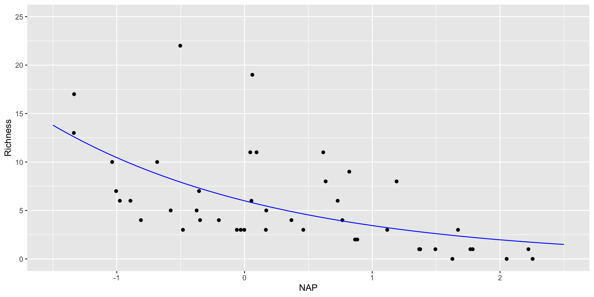
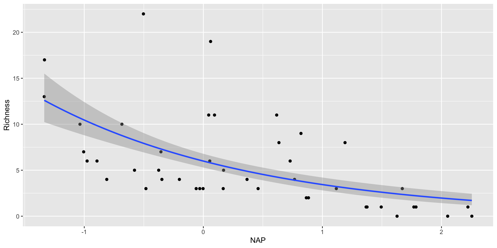

MAR 536: Lab 4
Gavin Fay
2025-02-12
Lab schedule
1/22: Introduction to R and R Studio, working with data
1/29: Visualizing data
2/05: Probability, linear modeling
2/12: Data wrangling, model summaries
2/19: Simulation, Resampling
2/26: Iteration
3/19: Creating functions, debugging
4/02: working with Spatial data 4/09: Flex: automated reporting & Quarto
Acknowledgements: Mine Çetinkaya-Rundel, Allison Horst
Today
Topics
- Poisson GLM
- Programming Practices
- Data wrangling
setup
Generalized linear modeling
All GLMs have the following three characteristics:
- A probability distribution describing a generative model for the outcome variable.
- A linear model:
\[\eta = \beta_0 + \beta_1 X_1 + \cdots + \beta_k X_k\]
- A link function that relates the linear model to the parameter of the outcome distribution.
Generalized linear modeling
Recall from lecture: \[\eta = \beta_1 x_1 + \beta_2 x_2 + \dots + \beta_p x_p\] \[f_Y(y;\mu,\varphi) = \exp\left[\frac{A}{\varphi}{y\lambda(\mu)-\gamma(\lambda(\mu))}+\tau(y,\varphi)\right]\] \[\mu = m(\eta) \text{, } \eta = m^{-1}(\mu)=l(\mu)\]
The combination of a response distribution, a link function and other information needed to carry out the modeling exercise is called the family of the generalized linear model.

The glm() function
The R function to fit a generalized linear model is glm() which uses the form:
fitted.model <- glm(formula, family=family.generator, data=data.frame)
Only new piece is the call to ‘family.generator’
Although complex, its use is fairly simple.
Where there is a choice of link, link can be supplied with the family name as a parameter.
Simple (inefficient) use: The following are equivalent.
Most of the extraction functions that can be applied to lm() can also be used with glm().
The glm() function
> tidy(RIKZ_lm1)
# A tibble: 2 × 5
term estimate std.error statistic p.value
<chr> <dbl> <dbl> <dbl> <dbl>
1 (Intercept) 6.69 0.658 10.2 5.25e-13
2 NAP -2.87 0.631 -4.55 4.42e- 5
> tidy(RIKZ_glm1)
# A tibble: 2 × 5
term estimate std.error statistic p.value
<chr> <dbl> <dbl> <dbl> <dbl>
1 (Intercept) 6.69 0.658 10.2 5.25e-13
2 NAP -2.87 0.631 -4.55 4.42e- 5Poisson regression
\[P(X=x) = \frac{e^{-\mu} \mu^x}{x!} \text{, } \mu_i = e^{\alpha+\beta_1 x_{1,i} + \dots + \beta_j x_{j,i}}\]

RIKZ example
Note that the default link for the poisson is log so we don’t have to specify here (see ?family).
summary(RIKZ_poisson)
Call:
glm(formula = Richness ~ NAP, family = poisson, data = RIKZ)
Coefficients:
Estimate Std. Error z value Pr(>|z|)
(Intercept) 1.79100 0.06329 28.297 < 2e-16 ***
NAP -0.55597 0.07163 -7.762 8.39e-15 ***
---
Signif. codes: 0 '***' 0.001 '**' 0.01 '*' 0.05 '.' 0.1 ' ' 1
(Dispersion parameter for poisson family taken to be 1)
Null deviance: 179.75 on 44 degrees of freedom
Residual deviance: 113.18 on 43 degrees of freedom
AIC: 259.18
Number of Fisher Scoring iterations: 5broom::augment()
As with lm(), the augment() function can be used to obtain the predictions from a fitted model object, and for a new data frame.
Note: default for type.predict is on the scale of the linear predictors. Set to "response" to obtain predictions on the scale of the response variable.
# A tibble: 45 × 9
Richness NAP .fitted .se.fit .resid .hat .sigma .cooksd .std.resid
<dbl> <dbl> <dbl> <dbl> <dbl> <dbl> <dbl> <dbl> <dbl>
1 11 0.045 1.77 0.0639 1.90 0.0239 1.61 0.0569 1.92
2 10 -1.04 2.37 0.0896 -0.206 0.0856 1.64 0.00213 -0.215
3 13 -1.34 2.53 0.106 0.112 0.142 1.64 0.00122 0.121
4 11 0.616 1.45 0.0827 2.72 0.0291 1.59 0.165 2.76
5 10 -0.684 2.17 0.0737 0.406 0.0476 1.64 0.00453 0.416
6 8 1.19 1.13 0.114 2.32 0.0401 1.60 0.170 2.37
7 9 0.82 1.34 0.0929 2.26 0.0328 1.60 0.125 2.30
8 8 0.635 1.44 0.0836 1.64 0.0294 1.62 0.0532 1.66
9 19 0.061 1.76 0.0641 4.33 0.0238 1.50 0.376 4.38
10 17 -1.33 2.53 0.106 1.18 0.141 1.63 0.148 1.27
# ℹ 35 more rowsObserved and fitted values for Poisson RIKZ
#create new values for beach height
new_data <- tibble(NAP = seq(-1.5,2.5,length.out=100))
#predict values for response based on new salinity
RIKZ_pois_pred <- augment(RIKZ_poisson,
newdata = new_data,
type.predict = "response",
se_fit = "TRUE")
RIKZ_pois_pred
# A tibble: 100 × 3
NAP .fitted .se.fit
<dbl> <dbl> <dbl>
1 -1.5 13.8 1.60
2 -1.46 13.5 1.53
3 -1.42 13.2 1.46
4 -1.38 12.9 1.40
5 -1.34 12.6 1.34
6 -1.30 12.3 1.28
7 -1.26 12.1 1.23
8 -1.22 11.8 1.17
9 -1.18 11.5 1.12
10 -1.14 11.3 1.07
# ℹ 90 more rows
fitting the GLM in the ggplot call
Lab Exercise 1/4: RIKZ Poisson GLMs
- Fit a poisson model to RIKZ species richness that includes NAP, and exposure and week as categorical variables (
factor). - Extract the model coefficients and their 95% confidence intervals.
- Plot the deviance residuals versus the linear predictor.
- Compare the results of this model with a model for RIKZ species richness that only included NAP as a covariate using deviance and AIC.
- BONUS Show how AIC changes when each linear predictor term is dropped from the model, and show the results of chi-square tests that compare these reduced models to the original model. (hint see the help for
?add1). - BONUS BONUS Fit a model for species richness that also includes salinity, temperature, and grain size, and perform backwards selection using AIC to obtain a ‘best’ model. How do the results compare to the other models? What is the appropriate set of variables to use?
dplyr::case_when()
The case_when() function is like a really friendly if-else statement. When used within mutate(), it allows you to add a new column containing values dependent on your condition(s).

dplyr::case_when()
To penguins, add a new column size_bin that contains:
- “large” if body mass is greater than 4500 g
- “medium” if body mass is greater than 3000 g, and less than or equal to 4500 g
- “small” if body mass is less than or equal to 3000 g
penguins |>
mutate(size_bin = case_when(
body_mass_g > 4500 ~ "large",
body_mass_g > 3000 & body_mass_g <= 4500 ~ "medium",
body_mass_g <= 3000 ~ "small"
)
) |>
select(species, island, size_bin, everything())# A tibble: 344 × 9
species island size_bin bill_length_mm bill_depth_mm flipper_length_mm
<fct> <fct> <chr> <dbl> <dbl> <int>
1 Adelie Torgersen medium 39.1 18.7 181
2 Adelie Torgersen medium 39.5 17.4 186
3 Adelie Torgersen medium 40.3 18 195
4 Adelie Torgersen <NA> NA NA NA
5 Adelie Torgersen medium 36.7 19.3 193
6 Adelie Torgersen medium 39.3 20.6 190
7 Adelie Torgersen medium 38.9 17.8 181
8 Adelie Torgersen large 39.2 19.6 195
9 Adelie Torgersen medium 34.1 18.1 193
10 Adelie Torgersen medium 42 20.2 190
# ℹ 334 more rows
# ℹ 3 more variables: body_mass_g <int>, sex <fct>, year <int>dplyr::case_when()
Starting with penguins:
Limit the columns to
species,year, andflipper_length_mmRename the
yearcolumn tostudy_yearOnly keep observations for Adelie penguins
Add a new column called
flipper_rankthat contains:- 1 if
flipper_length_mmis < 200 mm - 2 if
flipper_length_mmis >= 200 mm - 0 if
flipper_length_mmis anything else (e.g.NA)
- 1 if
penguins |>
select(species, year, flipper_length_mm) |>
rename(study_year = year) |>
filter(species == "Adelie") |>
mutate(flipper_rank = case_when(
flipper_length_mm < 200 ~ 1,
flipper_length_mm >= 200 ~ 2,
TRUE ~ 0 # 0 for anything else
))# A tibble: 152 × 4
species study_year flipper_length_mm flipper_rank
<fct> <int> <int> <dbl>
1 Adelie 2007 181 1
2 Adelie 2007 186 1
3 Adelie 2007 195 1
4 Adelie 2007 NA 0
5 Adelie 2007 193 1
6 Adelie 2007 190 1
7 Adelie 2007 181 1
8 Adelie 2007 195 1
9 Adelie 2007 193 1
10 Adelie 2007 190 1
# ℹ 142 more rowsExercise 2/4
Add a new column to penguins called study_year that contains:
- “Year 1” if the year is 2007
- “Year 2” if the year is 2008
- “Year 3” if the year is 2009
Starting with penguins, only keep observations for chinstrap penguins, then only keep the flipper_length_mm and body_mass_g variables. Add a new column called fm_ratio that contains the ratio of flipper length to body mass for each penguin. Next, add another column named ratio_bin which contains the word “high” if fm_ratio is greater than or equal to 0.05, “low” if the ratio is less than 0.05, and “no record” if anything else (e.g. NA).


Pivoting data
Not this…

but this!

Wider vs. longer
wider more columns
# A tibble: 2 × 4
customer_id item_1 item_2 item_3
<dbl> <chr> <chr> <chr>
1 1 bread milk banana
2 2 milk toilet paper <NA> longer more rows
# A tibble: 6 × 3
customer_id item_no item
<dbl> <chr> <chr>
1 1 item_1 bread
2 1 item_2 milk
3 1 item_3 banana
4 2 item_1 milk
5 2 item_2 toilet paper
6 2 item_3 <NA> pivot_longer()
data(as usual)cols: columns to pivot into longer formatnames_to: name of the column where column names of pivoted variables go (character string)values_to: name of the column where data in pivoted variables go (character string)
Customers \(\rightarrow\) purchases
purchases <- customers |>
pivot_longer( #<<
cols = item_1:item_3, # variables item_1 to item_3 #<<
names_to = "item_no", # column names -> new column called item_no #<<
values_to = "item" # values in columns -> new column called item #<<
) #<<
purchases# A tibble: 6 × 3
customer_id item_no item
<dbl> <chr> <chr>
1 1 item_1 bread
2 1 item_2 milk
3 1 item_3 banana
4 2 item_1 milk
5 2 item_2 toilet paper
6 2 item_3 <NA> Purchases \(\rightarrow\) customers
data(as usual)names_from: which column in the long format contains the what should be column names in the wide formatvalues_from: which column in the long format contains the what should be values in the new columns in the wide format
Steller sea lions
We have data on Steller sea lion pup counts over time at a bunch of rookeries in Alaska.

The number of data points for each rookery is not the same.
We want to investigate the annual trend in counts for each rookery.
Lab exercise 3/4 - Sea lion Pups
- Read in the data from
SSLpupcounts.csv. - Convert the data from wide format to long format.
- Print the top 10 rows of the new long format data.
- BONUS Convert back to wide format from long format.
05:00
We…
have multiple data frames
want to bring them together
Data: Women in science
Information on 10 women in science who changed the world
| name |
|---|
| Ada Lovelace |
| Marie Curie |
| Janaki Ammal |
| Chien-Shiung Wu |
| Katherine Johnson |
| Rosalind Franklin |
| Vera Rubin |
| Gladys West |
| Flossie Wong-Staal |
| Jennifer Doudna |
.footnote[ Source: Discover Magazine]
Inputs
# A tibble: 10 × 2
name profession
<chr> <chr>
1 Ada Lovelace Mathematician
2 Marie Curie Physicist and Chemist
3 Janaki Ammal Botanist
4 Chien-Shiung Wu Physicist
5 Katherine Johnson Mathematician
6 Rosalind Franklin Chemist
7 Vera Rubin Astronomer
8 Gladys West Mathematician
9 Flossie Wong-Staal Virologist and Molecular Biologist
10 Jennifer Doudna Biochemist # A tibble: 9 × 2
name known_for
<chr> <chr>
1 Ada Lovelace first computer algorithm
2 Marie Curie theory of radioactivity, discovery of elements polonium a…
3 Janaki Ammal hybrid species, biodiversity protection
4 Chien-Shiung Wu confim and refine theory of radioactive beta decy, Wu expe…
5 Katherine Johnson calculations of orbital mechanics critical to sending the …
6 Vera Rubin existence of dark matter
7 Gladys West mathematical modeling of the shape of the Earth which serv…
8 Flossie Wong-Staal first scientist to clone HIV and create a map of its genes…
9 Jennifer Doudna one of the primary developers of CRISPR, a ground-breaking…Desired output
# A tibble: 10 × 5
name profession birth_year death_year known_for
<chr> <chr> <dbl> <dbl> <chr>
1 Ada Lovelace Mathematician NA NA first co…
2 Marie Curie Physicist and Chemist NA NA theory o…
3 Janaki Ammal Botanist 1897 1984 hybrid s…
4 Chien-Shiung Wu Physicist 1912 1997 confim a…
5 Katherine Johnson Mathematician 1918 2020 calculat…
6 Rosalind Franklin Chemist 1920 1958 <NA>
7 Vera Rubin Astronomer 1928 2016 existenc…
8 Gladys West Mathematician 1930 NA mathemat…
9 Flossie Wong-Staal Virologist and Molecular … 1947 NA first sc…
10 Jennifer Doudna Biochemist 1964 NA one of t…Inputs, reminder
Joining data frames
Joining data frames
left_join(): all rows from xright_join(): all rows from yfull_join(): all rows from both x and ysemi_join(): all rows from x where there are matching values in y, keeping just columns from xinner_join(): all rows from x where there are matching values in y, return all combination of multiple matches in the case of multiple matchesanti_join(): return all rows from x where there are not matching values in y, never duplicate rows of x- …
Setup
For the next few slides…
left_join()

left_join()
# A tibble: 10 × 4
name profession birth_year death_year
<chr> <chr> <dbl> <dbl>
1 Ada Lovelace Mathematician NA NA
2 Marie Curie Physicist and Chemist NA NA
3 Janaki Ammal Botanist 1897 1984
4 Chien-Shiung Wu Physicist 1912 1997
5 Katherine Johnson Mathematician 1918 2020
6 Rosalind Franklin Chemist 1920 1958
7 Vera Rubin Astronomer 1928 2016
8 Gladys West Mathematician 1930 NA
9 Flossie Wong-Staal Virologist and Molecular Biologist 1947 NA
10 Jennifer Doudna Biochemist 1964 NAright_join()

right_join()
# A tibble: 8 × 4
name profession birth_year death_year
<chr> <chr> <dbl> <dbl>
1 Janaki Ammal Botanist 1897 1984
2 Chien-Shiung Wu Physicist 1912 1997
3 Katherine Johnson Mathematician 1918 2020
4 Rosalind Franklin Chemist 1920 1958
5 Vera Rubin Astronomer 1928 2016
6 Gladys West Mathematician 1930 NA
7 Flossie Wong-Staal Virologist and Molecular Biologist 1947 NA
8 Jennifer Doudna Biochemist 1964 NAfull_join()

full_join()
# A tibble: 10 × 4
name birth_year death_year known_for
<chr> <dbl> <dbl> <chr>
1 Janaki Ammal 1897 1984 hybrid species, biodiversity protec…
2 Chien-Shiung Wu 1912 1997 confim and refine theory of radioac…
3 Katherine Johnson 1918 2020 calculations of orbital mechanics c…
4 Rosalind Franklin 1920 1958 <NA>
5 Vera Rubin 1928 2016 existence of dark matter
6 Gladys West 1930 NA mathematical modeling of the shape …
7 Flossie Wong-Staal 1947 NA first scientist to clone HIV and cr…
8 Jennifer Doudna 1964 NA one of the primary developers of CR…
9 Ada Lovelace NA NA first computer algorithm
10 Marie Curie NA NA theory of radioactivity, discovery…inner_join()

inner_join()
# A tibble: 7 × 4
name birth_year death_year known_for
<chr> <dbl> <dbl> <chr>
1 Janaki Ammal 1897 1984 hybrid species, biodiversity protect…
2 Chien-Shiung Wu 1912 1997 confim and refine theory of radioact…
3 Katherine Johnson 1918 2020 calculations of orbital mechanics cr…
4 Vera Rubin 1928 2016 existence of dark matter
5 Gladys West 1930 NA mathematical modeling of the shape o…
6 Flossie Wong-Staal 1947 NA first scientist to clone HIV and cre…
7 Jennifer Doudna 1964 NA one of the primary developers of CRI…Putting it altogether
# A tibble: 10 × 5
name profession birth_year death_year known_for
<chr> <chr> <dbl> <dbl> <chr>
1 Ada Lovelace Mathematician NA NA first co…
2 Marie Curie Physicist and Chemist NA NA theory o…
3 Janaki Ammal Botanist 1897 1984 hybrid s…
4 Chien-Shiung Wu Physicist 1912 1997 confim a…
5 Katherine Johnson Mathematician 1918 2020 calculat…
6 Rosalind Franklin Chemist 1920 1958 <NA>
7 Vera Rubin Astronomer 1928 2016 existenc…
8 Gladys West Mathematician 1930 NA mathemat…
9 Flossie Wong-Staal Virologist and Molecular … 1947 NA first sc…
10 Jennifer Doudna Biochemist 1964 NA one of t…–>
–> –> –> –> –> –>
Exercise 4/4 Sea lion Rookery Counts
SSL_Sites.csvcontains the latitude and longitude of sea lion rookeries.
- Use a suitable
joinfunction to add the lat/lon information and geographic region to the counts dataset.
- Summarize the average annual pups that were counted between 2000-2015 in the Aleutian Islands (west of longitude 160W), the Gulf of Alaska (east of longitude 160W, west of 140W), and Southeast Alaska (South of latiutude 60 degrees N, but not in the Pacific Northwest).
- BONUS Look up how to make a map using
ggplot()to map the rookery counts in 2015.
–>
–>
–> –> –> –> –> –> –> –> –>
–>
–> –> –>
–>
–> –> –> –> –> –> –> –> –> –> –> –> –> –> –> –>
–>
–>
–> –> –> –> –> –> –> –> –>